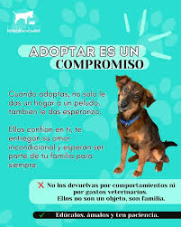

Antes de adoptar tenemos que tener en cuenta:
Autoevaluación Sincera:
Motivación: ¿Por qué quieres adoptar una mascota? ¿Es por compañía, para los niños, por moda? Asegúrate de que tus razones sean genuinas y centradas en el bienestar del animal.
Estilo de Vida: ¿Tu estilo de vida es compatible con las necesidades de la mascota? ¿Tienes tiempo suficiente para dedicarle a paseos, juegos, entrenamiento y afecto?
Espacio: ¿Tienes el espacio adecuado en tu hogar para la raza y tamaño del animal que consideras adoptar?
Recursos Económicos: ¿Estás preparado para cubrir los gastos de alimentación, atención veterinaria (incluyendo vacunas, desparasitación y posibles emergencias), juguetes, accesorios, higiene y posibles cuidados especiales?
Compromiso a Largo Plazo: ¿Estás dispuesto a cuidar de la mascota durante toda su vida, que puede ser de 10 a 15 años o más? ¿Qué pasará si te mudas, cambias de trabajo o tienes hijos?
Apoyo Familiar: ¿Todos los miembros de tu familia están de acuerdo con la adopción y están dispuestos a participar en el cuidado de la mascota? ¿Hay alergias o miedos en la familia?
Investigación:
Necesidades de la Especie y Raza: Investiga las necesidades específicas de la especie (perro, gato, conejo, etc.) y la raza (si aplica) que te interesa. Cada uno tiene requerimientos diferentes en cuanto a ejercicio, temperamento, salud y cuidados.
Refugios y Protectoras Locales: Ponte en contacto con refugios y protectoras de animales en tu área. Ellos pueden ofrecerte información valiosa y presentarte animales que se ajusten a tu estilo de vida.
Proceso de Adopción: Infórmate sobre el proceso de adopción de la organización a la que te acercas. Generalmente incluye entrevistas, cuestionarios, visitas al hogar y un contrato de adopción.
Preparación del Hogar:
Espacio Seguro: Prepara un espacio seguro y cómodo para la llegada de tu nueva mascota.
Elementos Esenciales: Adquiere los elementos básicos como cama, comederos, bebederos, correa, collar/arnés, caja de arena (para gatos), transportín y juguetes adecuados.
Seguridad: Asegura tu hogar para evitar accidentes (guardar productos tóxicos, cubrir cables, etc.).
Durante la Adopción:
El Proceso y la Adaptación: sé Paciente y Honesto: Durante el proceso de entrevista y selección, sé honesto sobre tu estilo de vida y capacidades. Los refugios buscan el mejor hogar para cada animal.
Visitas y Conocimiento: Dedica tiempo a visitar y conocer al animal que te interesa. Observa su temperamento e interactúa con él para ver si hay una buena conexión.
Período de Adaptación: Entiende que la llegada a un nuevo hogar es un gran cambio para la mascota. Ten paciencia durante el período de adaptación, que puede durar semanas o incluso meses. Permítele explorar a su propio ritmo y establece una rutina gradual.
Socialización (si aplica): Si adoptas un cachorro o un perro joven, es crucial una socialización temprana y positiva con personas, otros animales y diferentes entornos.
Después de la Adopción:
El Compromiso Continuo
Atención Veterinaria: Proporciona atención veterinaria regular, incluyendo vacunas, desparasitación, esterilización/castración y atención médica cuando sea necesario.
limentación Adecuada: Ofrece una alimentación de calidad y en las porciones adecuadas para su edad, tamaño y nivel de actividad.
Ejercicio y Estimulación Mental: Asegura que tu mascota reciba suficiente ejercicio físico y estimulación mental para prevenir el aburrimiento y problemas de comportamiento.
Entrenamiento y Educación: Invierte tiempo en el entrenamiento básico y la educación de tu mascota. Esto fortalecerá vuestro vínculo y facilitará la convivencia.
Afecto y Compañía: Brinda amor, atención y compañía a tu mascota. Ellos dependen de ti para su bienestar emocional.
Identificación: Asegúrate de que tu mascota lleve una identificación (collar con placa y/o microchip) para facilitar su regreso en caso de pérdida.
Responsabilidad Cívica: Cumple con las leyes y regulaciones locales sobre tenencia de mascotas (licencias, vacunas obligatorias, etc.).
No al Abandono: El abandono es una forma cruel e irresponsable de deshacerse de una mascota. Si en algún momento no puedes seguir cuidando de ella, busca alternativas responsables como contactar al refugio de origen o buscar un nuevo hogar adecuado.
